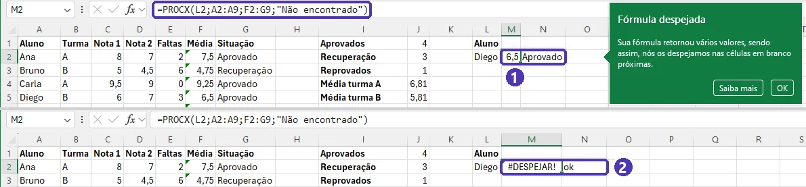

02 — Funções essenciais: SE, CONT.SE, SOMASE e PROCX¶
Curso: Pacote Office
Módulo: 02 — Excel
Tempo estimado: 2 h
Objetivos¶
Ao final desta aula, você será capaz de:
- Fazer a planilha tomar decisões com
SE,E,OUeSES. - Contar, somar e tirar média só do que atende a uma condição:
CONT.SE,SOMASE,MÉDIASEe as versões com várias condições. - Buscar um dado em uma tabela com
PROCX— e reconhecer oPROCV, que você ainda vai encontrar em planilhas antigas. - Tratar erros com
SEERROe usar funções simples de texto e data.
Pré-requisitos¶
- Aula 01: fórmulas, intervalos e referência absoluta (
$).
A planilha desta aula¶
Copie a tabela e cole no Excel na célula A1. Ela é usada nos exemplos e nos exercícios.
| Aluno | Turma | Nota 1 | Nota 2 | Faltas |
|---|---|---|---|---|
| Ana | A | 8 | 7 | 2 |
| Bruno | B | 5 | 4,5 | 6 |
| Carla | A | 9,5 | 9 | 0 |
| Diego | B | 6 | 7 | 3 |
| Elisa | A | 4 | 6 | 12 |
| Felipe | B | 7,5 | 8 | 1 |
| Gabriela | A | 6 | 5 | 4 |
| Henrique | B | 3 | 5,5 | 9 |
Em F1 escreva Média e em F2 =MÉDIA(C2:D2); copie até F9.
Triângulo verde no canto das médias
O Excel marca a coluna F com um triângulo verde e o aviso “A fórmula omite células adjacentes”: ele estranha que a coluna E (Faltas), logo ao lado, ficou fora da média. Aqui é de propósito — faltas não entram na nota. Pode ignorar.
SE: a fórmula que decide¶
=SE(F2>=6;"Aprovado";"Reprovado")— se a média for 6 ou mais, escreve Aprovado; senão, Reprovado.- Os testes usam os comparadores
=,<>(diferente),>,<,>=e<=. - Texto vai entre aspas (
"Aprovado"); números e endereços, sem aspas.
Mais de uma condição: E e OU¶
E(teste1; teste2)é verdadeiro só se todos forem verdadeiros:=SE(E(F2>=6;E2<=10);"Aprovado";"Reprovado")— média boa e poucas faltas.OU(teste1; teste2)é verdadeiro se pelo menos um for:=SE(OU(F2<6;E2>8);"Atenção";"")— média baixa ou muitas faltas. As aspas vazias""deixam a célula em branco.
Mais de dois resultados: SES¶
Em vez de um SE dentro do outro, use SES, que testa em ordem e para no primeiro verdadeiro:
O último par, VERDADEIRO;"Reprovado", é o “senão”: vale para tudo o que não passou nos testes anteriores.
Leia a fórmula em voz alta
“Se a média for maior ou igual a 6, Aprovado; se for maior ou igual a 4, Recuperação; senão, Reprovado.” Se a frase faz sentido, a fórmula provavelmente está certa. A ordem importa: o teste mais exigente vem primeiro.
Contar e somar com condição¶
| Função | O que faz | Exemplo |
|---|---|---|
CONT.SE(intervalo; critério) |
conta as células que atendem ao critério | =CONT.SE(F2:F9;">=6") |
SOMASE(intervalo; critério; intervalo_soma) |
soma uma coluna onde outra atende ao critério | =SOMASE(B2:B9;"B";E2:E9) |
MÉDIASE(intervalo; critério; intervalo_média) |
média com condição | =MÉDIASE(B2:B9;"A";F2:F9) |
CONT.SES(int1; crit1; int2; crit2; ...) |
conta com várias condições | =CONT.SES(B2:B9;"A";F2:F9;">=6") |
SOMASES(intervalo_soma; int1; crit1; ...) |
soma com várias condições | =SOMASES(E2:E9;B2:B9;"A";F2:F9;"<6") |
- O critério vai entre aspas quando tem comparador:
">=6","<>A". - O critério pode vir de uma célula:
=CONT.SE(G2:G9;J2)conta quantas vezes aparece o que está escrito em J2. Para juntar comparador e célula:">="&J2.
SOMASES começa pelo intervalo da soma
Em SOMASE, o intervalo da soma é o último argumento; em SOMASES (e MÉDIASES), é o primeiro. É a confusão mais comum com essas funções — a dica que aparece embaixo da célula mostra a ordem certa.

Completa, a fórmula da tabela acima — =SOMASES(E2:E9;B2:B9;"A";F2:F9;"<6") — soma as faltas de quem é da turma A e tem média abaixo de 6: 16 (Elisa e Gabriela).
Buscar dados: PROCX¶
PROCX procura um valor em uma coluna e devolve o que está na mesma linha de outra coluna:
=PROCX("Diego";A2:A9;F2:F9)➔ 6,5 (a média do Diego).=PROCX(J2;A2:A9;B2:B9;"Não encontrado")➔ a turma do aluno digitado em J2, ou a mensagem, se o nome não existir.- Se o “o que devolver” tiver várias colunas (
F2:G9), o resultado se espalha pelas células ao lado: média e situação de uma vez.


#DESPEJAR!; o contorno tracejado mostra onde o resultado queria ficar.E o PROCV?¶
Você vai ver muito PROCV em planilhas antigas e em tutoriais:
Ele procura na primeira coluna do intervalo e devolve a 6ª coluna; o FALSO pede correspondência exata. Funciona, mas quebra se alguém inserir uma coluna no meio e não busca para a esquerda. No Microsoft 365, prefira PROCX.
PROCX não existe em versões antigas
PROCX existe no Microsoft 365 e no Excel 2021 ou mais novo. Se a planilha for aberta em um Excel 2016 ou 2019, a célula mostra #NOME? — nesse caso, use PROCV.
Tratar erros: SEERRO¶
=SEERRO(fórmula; valor_se_der_erro) mostra outra coisa no lugar do erro:
=SEERRO(F2/E2;0)— se as faltas forem zero, mostra0em vez de#DIV/0!.#N/Dé o erro de “não encontrado” das funções de busca. NoPROCX, prefira o 4º argumento; em fórmulas antigas, você verá=SEERRO(PROCV(...);"Não encontrado").
SEERRO esconde todos os erros
Ele também esconde os erros que você deveria ver, como um nome de função digitado errado. Use só quando souber qual erro espera.
Texto e datas em uma olhada¶
| Função ou operador | O que faz | Exemplo ➔ resultado |
|---|---|---|
& |
junta textos | =A2&" — Turma "&B2 ➔ Ana — Turma A |
ARRUMAR |
tira espaços sobrando | =ARRUMAR(" Ana Souza ") ➔ Ana Souza |
PRI.MAIÚSCULA |
Iniciais Maiúsculas | =PRI.MAIÚSCULA("ana souza") ➔ Ana Souza |
MAIÚSCULA |
MAIÚSCULAS | =MAIÚSCULA("ana") ➔ ANA |
HOJE |
a data de hoje (muda sozinha) | =HOJE() |
| subtração de datas | dias entre duas datas | =B2-A2 (formate o resultado como Geral) |
DATADIF |
idade em anos completos | =DATADIF(A2;HOJE();"A") |
Preenchimento Relâmpago
Para separar ou juntar textos sem fórmula, digite o primeiro resultado à mão na coluna ao lado (por exemplo, só o primeiro nome), deixe a célula de baixo selecionada e use Dados ➔ Preenchimento Relâmpago (ou Ctrl + E). O Excel descobre o padrão e completa a coluna.

Equivalentes gratuitos: LibreOffice Calc e Google Planilhas
| Função | LibreOffice Calc | Google Planilhas |
|---|---|---|
SE, E, OU, CONT.SE, SOMASE, MÉDIASE, SEERRO |
Mesmos nomes | Mesmos nomes |
SES |
SES |
IFS |
PROCX |
PROCX, a partir do LibreOffice 24.8; antes, use PROCV |
XLOOKUP |
PROCV |
PROCV |
PROCV |
| Preenchimento Relâmpago | Não tem; use fórmulas de texto | Preenchimento inteligente (sugere sozinho) |
No Google Planilhas, algumas funções mais novas só têm o nome em inglês. Se um nome em português não for reconhecido, comece a digitar o nome em inglês e escolha da lista.
⚠️ Erros comuns¶
- Esquecer as aspas no texto:
=SE(F2>=6;Aprovado;Reprovado)dá#NOME?. Texto sempre entre aspas. - Testes do
SESna ordem errada: começando porF2>=4, quem tirou 9 também cai em Recuperação. Do mais exigente para o menos. - Intervalos de tamanhos diferentes:
=SOMASE(B2:B9;"B";E2:E8)soma a coluna errada. Os intervalos devem ter o mesmo número de linhas. - Espaço escondido no nome:
"Ana "não é igual a"Ana", e oPROCXnão encontra. UseARRUMARna coluna de nomes.
Exercícios¶
Use a planilha desta aula, com a coluna F (Média) já calculada.
Básico (fixação)¶
- Em G1 escreva
Situação. Em G2, mostre Aprovado se a média for 6 ou mais e Reprovado se não for; copie até G9. - Em I1 escreva
Aprovadose em J1 conte quantos alunos foram aprovados. - Em I2 escreva
Média da turmae em J2 calcule a média de todas as médias.
Gabarito — Básico
- G2:
=SE(F2>=6;"Aprovado";"Reprovado")➔ copie até G9. - J1:
=CONT.SE(G2:G9;"Aprovado")➔ 4 (Ana, Carla, Diego e Felipe). - J2:
=MÉDIA(F2:F9)➔ 6,3125 (com duas casas: 6,31).
Confira as médias: 7,5 · 4,75 · 9,25 · 6,5 · 5 · 7,75 · 5,5 · 4,25.
Intermediário (aplicação)¶
A escola mudou a regra. Agora:
- Aprovado: média 6 ou mais e no máximo 10 faltas;
- Recuperação: média 4 ou mais e no máximo 10 faltas;
-
Reprovado: todos os outros casos.
-
Reescreva a fórmula da coluna G com a regra nova.
- Monte um resumo: quantos alunos em cada situação; a média da turma A e da turma B; o total de faltas da turma B; e quantos alunos da turma A foram aprovados.
Gabarito — Intermediário
- G2:
=SES(E(F2>=6;E2<=10);"Aprovado";E(F2>=4;E2<=10);"Recuperação";VERDADEIRO;"Reprovado")➔ copie até G9. - Resumo (escreva os rótulos na coluna I e as fórmulas na J):
=CONT.SE(G2:G9;"Aprovado")➔ 4 ·=CONT.SE(G2:G9;"Recuperação")➔ 3 ·=CONT.SE(G2:G9;"Reprovado")➔ 1=MÉDIASE(B2:B9;"A";F2:F9)➔ 6,81 ·=MÉDIASE(B2:B9;"B";F2:F9)➔ 5,81=SOMASE(B2:B9;"B";E2:E9)➔ 19 faltas=CONT.SES(B2:B9;"A";G2:G9;"Aprovado")➔ 2 (Ana e Carla)
Repare na Elisa: média 5, que daria Recuperação, mas 12 faltas — por isso fica Reprovado. Bruno, Gabriela e Henrique ficam em Recuperação.

Avançado (desafio)¶
- Monte uma ficha de consulta: em L1 escreva
Alunoe em L2 digite um nome. Em M2, uma única fórmula deve mostrar a média e, na célula ao lado, a situação do aluno. Se o nome não existir, deve aparecer Não encontrado. - Em H1 escreva
Alertae, em H2:H9, mostre Atenção para quem tem média abaixo de 6 ou mais de 8 faltas, deixando a célula vazia para os outros. Conte quantos alunos estão em alerta.
Gabarito — Avançado
- M2:
=PROCX(L2;A2:A9;F2:G9;"Não encontrado"). Como o retorno tem duas colunas (F e G), o resultado se espalha em M2:N2. Teste:Diego➔ 6,5 e Aprovado;Elisa➔ 5 e Reprovado;Zeca➔ Não encontrado. - H2:
=SE(OU(F2<6;E2>8);"Atenção";"")➔ copie até H9. Para contar:=CONT.SE(H2:H9;"Atenção")➔ 4 (Bruno, Elisa, Gabriela e Henrique).
Se aparecer #DESPEJAR! na M2: a célula N2 não está vazia, e o resultado não tem onde se espalhar. Apague o que estiver em N2.
💡 Resumo¶
SE(teste; se_sim; se_não)decide;Eexige tudo,OUaceita um;SESresolve vários resultados em ordem.CONT.SE,SOMASE,MÉDIASEtrabalham com uma condição; as versões com S no fim aceitam várias.PROCXbusca em qualquer direção e já trata o “não encontrado”;PROCVé o jeito antigo.- Texto entre aspas; critérios com comparador também (
">=6").
➡️ Próximo passo¶
03 — Tabelas, gráficos e formatação condicional: transformar dados em uma tabela organizada, destacar o que importa com cores e mostrar tudo em um gráfico.